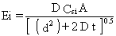
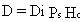
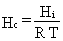
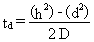

2.11 LAND TREATMENT FACILITIES
EPA's (1988, 1990) model for computing volatilization rates from "land
treatment facilities" or "old spill sites" is implemented in the user-interface
(AG-VCASE = 4) of MEPAS 3.n versions. The use of microbial activity in
the upper soil zone to biodegrade oily industrial sludge has been referred
to as landfarming or land treatment. Petroleum industries often manage
oily residuals by use of the land treatment process. Studies regarding
potential air emissions from this process have been reviewed by Thibodeaux
and Hwang (1982).
A model developed by Thibodeaux and Hwang (1982) is used for estimating
emission rates from land treatment of oily wastes. This model assumes that
oily sludge spread on the soil surface forms lumps and films within the
soil texture and that these lumps and films dry out slowly as a result
of diffusion of vapors through the pores. The loss of contaminant to the
air is computed as a function of time, assuming that the soil phase controls
the vapor diffusion. Also, the concentration in the contaminant pool is
assumed to remain constant until all the liquid-phase contaminant has been
lost entirely to the atmosphere. A layering of the contaminant is assumed
to occur in the soil consisting of a "dry" surface layer, with low-contaminant
concentrations, located over a "wet" layer with high-contaminant concentrations.
The terms wet and dry refer to the presence or absence, respectively, of
significant quantities of the contaminant in liquid form. The contaminant
is assumed to have pooled in the wet layer and, thus, has uniform concentrations
within the layer. In addition to its use for land treatment facilities,
this model is also applicable to estimating emissions from soils that contain
a pool of waste liquid within the soil.
The emission rate for the land treatment model (also referred to as the
old spill model) is computed according to Thibodeaux and Hwang (1982) using

(35)
where
Ei = emission rate of the constituent i (g/s)
D = total diffusion from both liquid phase and gas phase (cm2/s)
Csi = liquid-phase concentration of i in the soil (g/cm3)
A = contaminated surface area (cm2)
d = depth of the dry layer at time for which analysis begins (cm)
t = time measured from time for which analysis begins (s).
Total diffusion from both liquid phases and gas phases is defined in terms
of the flux of the constituent. The constituent first evaporates into voids
in the soil and then diffuses into the atmosphere through the dry layer.
This value can be estimated by the following equation:

(36)
where
Di = air diffusion coefficient of constituent i (cm2/s)
Ps = the ratio of air filled to total porosity (Equation 5) (dimensionless)
Hc = Henry's law constant in concentration form (dimensionless).
Henry's law constant in concentration form, Hc, is defined as
the ratio of near-surface air concentration to soil concentration of the
constituent. This constant is computed using the following method, given
by Lyman et al. (1982):

(37)
where
Hi = Henry's law constant of constituent i (atm m3/mole)
R = gas constant (8.2 x 10-5 atm m3/mole-° K)
T = annual average air temperature (° K)
As noted above, this method of estimating
the volatilization rate from land treatment/old spills assumes that a constant
pool of concentration of the constituent exists in the soil until all of
the constituent has been volatilized to the atmosphere. Based on this assumption,
Hwang (1982) provides an equation for computing the dry-out time of a spill
as

(38)
where
td = time it takes all of the constituent i to vaporize (s)
h = the depth to the bottom of the contamination (cm)
d = depth of the dry layer (cm)
D = total diffusion coefficient to the atmosphere (cm2/s).